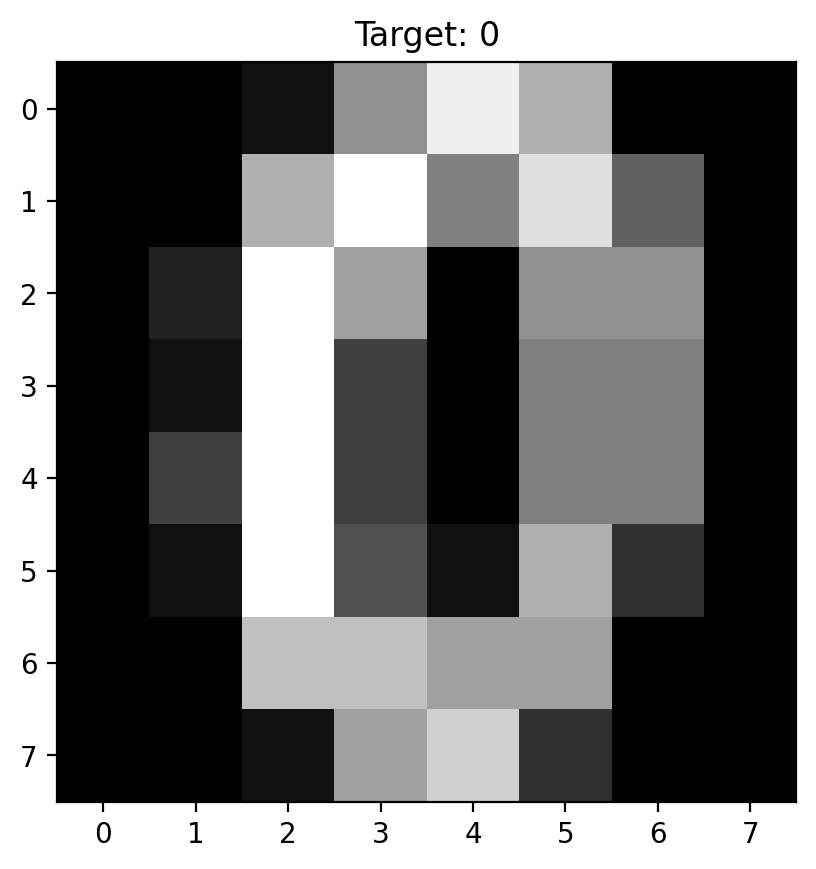

import matplotlib.pyplot as plt
import numpy as np
print(np.__version__)
import torch
import torch.nn as nn
import pandas as pd
# Retina mode
%matplotlib inline
%config InlineBackend.figure_format = 'retina'2.2.4Nipun Batra
March 18, 2025
joint distributions, PCA, dimensionality reduction, image analysis, scikit-learn, digits dataset
—author: Nipun Batratitle: Images and Joint Distributionsdescription: Exploring joint distributions through image data analysis using PCA dimensionality reduction and visualization of multi-dimensional probability distributionscategories: - Machine Learning - Data Science - Probability - Distributionskeywords: [joint distributions, PCA, dimensionality reduction, image analysis, scikit-learn, digits dataset]date: ’2025-03-18’badges: truetoc: true—
import matplotlib.pyplot as plt
import numpy as np
print(np.__version__)
import torch
import torch.nn as nn
import pandas as pd
# Retina mode
%matplotlib inline
%config InlineBackend.figure_format = 'retina'2.2.4Data Interpretation:- X.shape = (1797, 64): We have 1,797 samples from a 64-dimensional joint distribution- Each row represents one realization from this joint distribution - Each column represents one random variable (pixel intensity)- The joint distribution captures how all 64 pixels co-vary across different digit images
# Visualize several samples from our joint distributionfig, axes = plt.subplots(2, 5, figsize=(12, 6))axes = axes.ravel()for i in range(10): # Each image is a sample from the 64-dimensional joint distribution sample_idx = i * 180 # Spread out the examples image = X[sample_idx].reshape(8, 8) axes[i].imshow(image, cmap='gray') axes[i].set_title(f'Digit: {y[sample_idx]}\nSample #{sample_idx}') axes[i].axis('off')plt.suptitle('Individual Samples from the 64-Dimensional Joint Distribution', fontsize=14)plt.tight_layout()plt.show()# Show the actual 64-dimensional vector for one sampleprint(f"Sample {sample_idx} as 64-dimensional vector:")print(f"First 10 values: {X[sample_idx][:10]}")print(f"Range: [{X[sample_idx].min():.1f}, {X[sample_idx].max():.1f}]")print(f"Mean: {X[sample_idx].mean():.2f}, Std: {X[sample_idx].std():.2f}")# Analyze marginal distributions of pixelsfig, axes = plt.subplots(2, 3, figsize=(15, 8))# 1. Mean image (expected value of the joint distribution)mean_image = X.mean(axis=0).reshape(8, 8)axes[0, 0].imshow(mean_image, cmap='gray')axes[0, 0].set_title('Mean Image\n(Expected Value)')axes[0, 0].axis('off')# 2. Standard deviation image (marginal variances)std_image = X.std(axis=0).reshape(8, 8)axes[0, 1].imshow(std_image, cmap='hot')axes[0, 1].set_title('Standard Deviation per Pixel\n(Marginal Variances)')axes[0, 1].axis('off')# 3. Sample of marginal distributionspixel_indices = [10, 28, 35, 50] # Different pixel positionsfor i, px_idx in enumerate(pixel_indices): if i < 2: ax = axes[0, 2] else: ax = axes[1, 2] ax.hist(X[:, px_idx], bins=30, alpha=0.7, density=True, label=f'Pixel {px_idx}')axes[0, 2].set_title('Marginal Distributions\nof Selected Pixels')axes[0, 2].set_xlabel('Pixel Intensity')axes[0, 2].set_ylabel('Density')axes[0, 2].legend()axes[1, 2].set_xlabel('Pixel Intensity')axes[1, 2].set_ylabel('Density')axes[1, 2].legend()# 4. Pixel correlation analysis# Sample a few pixels to show correlationsample_pixels = [20, 21, 28, 29] # Adjacent pixelspixel_data = X[:, sample_pixels]correlation_matrix = np.corrcoef(pixel_data.T)im = axes[1, 0].imshow(correlation_matrix, cmap='coolwarm', vmin=-1, vmax=1)axes[1, 0].set_title('Correlation Matrix\n(Sample Adjacent Pixels)')axes[1, 0].set_xticks(range(len(sample_pixels)))axes[1, 0].set_yticks(range(len(sample_pixels)))axes[1, 0].set_xticklabels([f'Px{i}' for i in sample_pixels])axes[1, 0].set_yticklabels([f'Px{i}' for i in sample_pixels])plt.colorbar(im, ax=axes[1, 0])# 5. Scatter plot showing dependenceaxes[1, 1].scatter(X[:, 20], X[:, 21], alpha=0.3, s=10)axes[1, 1].set_title('Pixel 20 vs Pixel 21\n(Adjacent Pixels)')axes[1, 1].set_xlabel('Pixel 20 Intensity')axes[1, 1].set_ylabel('Pixel 21 Intensity')axes[1, 1].grid(True, alpha=0.3)plt.tight_layout()plt.show()print("Joint Distribution Properties:")print(f"- Dimensionality: {X.shape[1]} (each sample is 64-dimensional)")print(f"- Sample size: {X.shape[0]} realizations")print(f"- Mean pixel intensity: {X.mean():.2f}")print(f"- Overall variance: {X.var():.2f}")print(f"- Range: [{X.min():.1f}, {X.max():.1f}]")print(f"- Correlation between adjacent pixels (20,21): {np.corrcoef(X[:, 20], X[:, 21])[0,1]:.3f}")—## Summary and Key Takeaways### What We’ve Learned About Joint Distributions:1. High-Dimensional Reality: Real data often lives in high-dimensional spaces (64D for 8×8 images), but the effective dimensionality can be much lower2. PCA Reveals Structure: Principal Component Analysis uncovers the underlying structure of joint distributions by finding directions of maximum variance3. Covariance is Key: The joint distribution’s covariance matrix completely determines the PCA transformation - they are mathematically equivalent4. Dimensionality Reduction: Most of the information in a 64-dimensional joint distribution can be captured in just a few principal components5. Visual Interpretation: We can visualize complex joint distributions by projecting to 2D or 3D spaces### Mathematical Connections:- Joint Distribution → Covariance Matrix → Eigendecomposition → Principal Components- PCA components are eigenvectors of the covariance matrix- PCA eigenvalues represent variance along each principal direction- Reconstruction quality depends on how many components we retain### Practical Applications:1. Data Compression: Store images using fewer principal components2. Noise Reduction: Reconstruct data using only major components3. Visualization: Plot high-dimensional data in 2D/3D4. Feature Extraction: Use PC scores as features for machine learning5. Anomaly Detection: Identify samples that don’t fit the joint distribution pattern### Key Insights for Data Science:- Curse of Dimensionality: High-dimensional spaces are mostly empty- Intrinsic Dimensionality: Data often has lower effective dimensionality than the ambient space- Correlation Structure: Understanding dependencies between variables is crucial- Trade-offs: Dimensionality reduction involves balancing information retention vs. simplicityThis analysis demonstrates how abstract concepts like joint distributions become concrete and actionable through computational tools like PCA, bridging probability theory with practical data analysis.
# Explore the relationship between PCA and covariance structurefrom sklearn.covariance import EmpiricalCovariance# Compute sample covariance matrixcov_estimator = EmpiricalCovariance()cov_matrix = cov_estimator.fit(X).covariance_# Compare with PCA eigendecompositioneigenvals, eigenvecs = np.linalg.eigh(cov_matrix)# Sort in descending order (like PCA)idx = np.argsort(eigenvals)[::-1]eigenvals = eigenvals[idx]eigenvecs = eigenvecs[:, idx]# Create visualizationfig, axes = plt.subplots(2, 3, figsize=(15, 10))# 1. Covariance matrixim1 = axes[0, 0].imshow(cov_matrix, cmap='coolwarm')axes[0, 0].set_title('Sample Covariance Matrix\n(64×64)')axes[0, 0].set_xlabel('Pixel Index')axes[0, 0].set_ylabel('Pixel Index')plt.colorbar(im1, ax=axes[0, 0])# 2. Eigenvalues comparisonaxes[0, 1].plot(range(1, 11), eigenvals[:10], 'bo-', label='Covariance Eigenvalues')axes[0, 1].plot(range(1, 11), pca_detailed.explained_variance_, 'ro-', label='PCA Eigenvalues')axes[0, 1].set_title('Eigenvalues Comparison')axes[0, 1].set_xlabel('Component')axes[0, 1].set_ylabel('Eigenvalue')axes[0, 1].legend()axes[0, 1].grid(True)# 3. Eigenvector comparison (first PC)axes[0, 2].plot(eigenvecs[:, 0], 'b-', label='Cov. Eigenvector 1')axes[0, 2].plot(pca_detailed.components_[0], 'r--', label='PCA Component 1')axes[0, 2].set_title('First Principal Component\n(Eigenvector Comparison)')axes[0, 2].set_xlabel('Pixel Index')axes[0, 2].set_ylabel('Component Weight')axes[0, 2].legend()axes[0, 2].grid(True)# 4. Correlation matrix (easier to interpret)correlation_matrix = np.corrcoef(X.T)im2 = axes[1, 0].imshow(correlation_matrix, cmap='coolwarm', vmin=-1, vmax=1)axes[1, 0].set_title('Sample Correlation Matrix\n(64×64)')axes[1, 0].set_xlabel('Pixel Index')axes[1, 0].set_ylabel('Pixel Index')plt.colorbar(im2, ax=axes[1, 0])# 5. Local correlation structure (show 8x8 spatial structure)# Reshape correlation matrix to show spatial structurespatial_corr = np.zeros((8, 8))center_pixel = 28 # Middle-ish pixelfor i in range(64): row, col = i // 8, i % 8 spatial_corr[row, col] = correlation_matrix[center_pixel, i]im3 = axes[1, 1].imshow(spatial_corr, cmap='coolwarm', vmin=-1, vmax=1)axes[1, 1].set_title(f'Correlation with Pixel {center_pixel}\n(Spatial Layout)')plt.colorbar(im3, ax=axes[1, 1])# 6. Distribution of correlationsaxes[1, 2].hist(correlation_matrix[np.triu_indices_from(correlation_matrix, k=1)], bins=50, alpha=0.7, density=True)axes[1, 2].set_title('Distribution of Pairwise\nPixel Correlations')axes[1, 2].set_xlabel('Correlation Coefficient')axes[1, 2].set_ylabel('Density')axes[1, 2].axvline(0, color='red', linestyle='--', alpha=0.7)axes[1, 2].grid(True, alpha=0.3)plt.tight_layout()plt.show()# Statistical summaryprint("COVARIANCE STRUCTURE ANALYSIS:")print("="*40)print(f"Covariance matrix shape: {cov_matrix.shape}")print(f"Covariance matrix rank: {np.linalg.matrix_rank(cov_matrix)}")print(f"Trace (total variance): {np.trace(cov_matrix):.2f}")print(f"Maximum correlation: {correlation_matrix[correlation_matrix < 1].max():.3f}")print(f"Minimum correlation: {correlation_matrix.min():.3f}")print(f"Mean absolute correlation: {np.abs(correlation_matrix[np.triu_indices_from(correlation_matrix, k=1)]).mean():.3f}")print("\nPROOF THAT PCA = COVARIANCE EIGENDECOMPOSITION:")print("="*50)print(f"Eigenvalue difference (should be ~0): {np.max(np.abs(eigenvals[:10] - pca_detailed.explained_variance_)):.2e}")print(f"Eigenvector difference (should be ~0): {np.max(np.abs(np.abs(eigenvecs[:, 0]) - np.abs(pca_detailed.components_[0]))):.2e}")print("\n✓ PCA components are eigenvectors of the covariance matrix!")print("✓ PCA eigenvalues are eigenvalues of the covariance matrix!")# Detailed PCA Analysispca_detailed = PCA(n_components=10) # Get more components for analysisX_reduced_detailed = pca_detailed.fit_transform(X)# Create comprehensive visualizationfig = plt.figure(figsize=(16, 12))# 1. Explained variance ratioax1 = plt.subplot(3, 4, 1)plt.bar(range(10), pca_detailed.explained_variance_ratio_)plt.title('Explained Variance Ratio\nby Principal Component')plt.xlabel('Component')plt.ylabel('Variance Ratio')plt.xticks(range(10))# 2. Cumulative explained varianceax2 = plt.subplot(3, 4, 2)cumsum_var = np.cumsum(pca_detailed.explained_variance_ratio_)plt.plot(range(10), cumsum_var, 'bo-')plt.title('Cumulative Explained Variance')plt.xlabel('Number of Components')plt.ylabel('Cumulative Variance Ratio')plt.grid(True)# 3-6. First 4 principal components as imagesfor i in range(4): ax = plt.subplot(3, 4, 3 + i) component_image = pca_detailed.components_[i].reshape(8, 8) plt.imshow(component_image, cmap='RdBu_r') plt.title(f'PC{i+1}\n(Var: {pca_detailed.explained_variance_ratio_[i]:.3f})') plt.axis('off') plt.colorbar(shrink=0.6)# 7. 2D projection colored by digitax7 = plt.subplot(3, 4, 7)scatter = plt.scatter(X_reduced_detailed[:, 0], X_reduced_detailed[:, 1], c=y, cmap='tab10', alpha=0.6, s=10)plt.title('Joint Distribution Projection\n(First 2 PCs)')plt.xlabel('PC1')plt.ylabel('PC2')plt.colorbar(scatter, shrink=0.6)# 8. Different PC pairsax8 = plt.subplot(3, 4, 8)plt.scatter(X_reduced_detailed[:, 2], X_reduced_detailed[:, 3], c=y, cmap='tab10', alpha=0.6, s=10)plt.title('Joint Distribution Projection\n(PC3 vs PC4)')plt.xlabel('PC3')plt.ylabel('PC4')# 9. Reconstruction demonstrationax9 = plt.subplot(3, 4, 9)# Original imageoriginal_idx = 100original_image = X[original_idx].reshape(8, 8)plt.imshow(original_image, cmap='gray')plt.title(f'Original\n(Digit {y[original_idx]})')plt.axis('off')# 10. Reconstruction with 2 componentsax10 = plt.subplot(3, 4, 10)pca_2 = PCA(n_components=2)X_2d = pca_2.fit_transform(X)X_reconstructed_2 = pca_2.inverse_transform(X_2d)reconstructed_image_2 = X_reconstructed_2[original_idx].reshape(8, 8)plt.imshow(reconstructed_image_2, cmap='gray')plt.title('2-PC Reconstruction')plt.axis('off')# 11. Reconstruction with 5 componentsax11 = plt.subplot(3, 4, 11)pca_5 = PCA(n_components=5)X_5d = pca_5.fit_transform(X)X_reconstructed_5 = pca_5.inverse_transform(X_5d)reconstructed_image_5 = X_reconstructed_5[original_idx].reshape(8, 8)plt.imshow(reconstructed_image_5, cmap='gray')plt.title('5-PC Reconstruction')plt.axis('off')# 12. Reconstruction error analysisax12 = plt.subplot(3, 4, 12)n_components_range = range(1, 21)reconstruction_errors = []for n_comp in n_components_range: pca_temp = PCA(n_components=n_comp) X_temp = pca_temp.fit_transform(X) X_recon_temp = pca_temp.inverse_transform(X_temp) error = np.mean((X - X_recon_temp) ** 2) reconstruction_errors.append(error)plt.plot(n_components_range, reconstruction_errors, 'ro-')plt.title('Reconstruction Error\nvs Number of Components')plt.xlabel('Number of Components')plt.ylabel('Mean Squared Error')plt.grid(True)plt.tight_layout()plt.show()# Print summary statisticsprint("JOINT DISTRIBUTION ANALYSIS SUMMARY:")print("="*50)print(f"Original dimensionality: {X.shape[1]}")print(f"Number of samples: {X.shape[0]}")print(f"First 2 PCs explain {cumsum_var[1]:.1%} of total variance")print(f"First 5 PCs explain {cumsum_var[4]:.1%} of total variance")print(f"First 10 PCs explain {cumsum_var[9]:.1%} of total variance")print(f"\nThis means the 64-dimensional joint distribution has most of its")print(f"structure captured in just a few principal directions!")print(f"\nReconstruction Quality:")print(f"- 2 components: MSE = {reconstruction_errors[1]:.3f}")print(f"- 5 components: MSE = {reconstruction_errors[4]:.3f}")print(f"- 10 components: MSE = {reconstruction_errors[9]:.3f}")Let’s explore this in more detail by analyzing the principal components and their relationship to the joint distribution:
Understanding the PCA Results:- Original space: 64-dimensional joint distribution (64 pixel intensities)- Reduced space: 2-dimensional projection (captures main patterns of co-variation)- Information loss: We visualize the most important 2 directions out of 64 possibleThe scatter plot shows how the 64-dimensional samples project onto the first two principal components, revealing the underlying structure of the joint distribution.
X, y = load_digits(return_X_y=True)
X = X.astype(np.float32)
y = y.astype(np.int64)
print(X.shape, y.shape)(1797, 64) (1797,)(array([ 0., 0., 5., 13., 9., 1., 0., 0., 0., 0., 13., 15., 10.,
15., 5., 0., 0., 3., 15., 2., 0., 11., 8., 0., 0., 4.,
12., 0., 0., 8., 8., 0., 0., 5., 8., 0., 0., 9., 8.,
0., 0., 4., 11., 0., 1., 12., 7., 0., 0., 2., 14., 5.,
10., 12., 0., 0., 0., 0., 6., 13., 10., 0., 0., 0.],
dtype=float32),
np.int64(0))Text(0.5, 1.0, 'Target: 0')